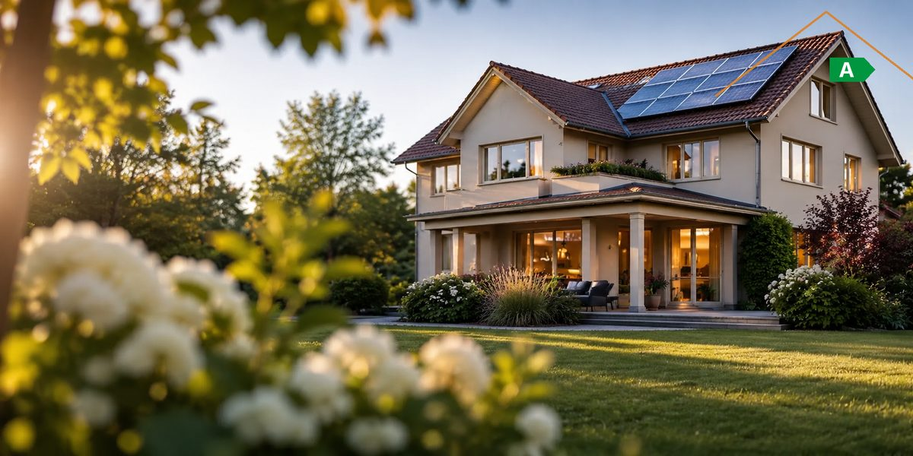
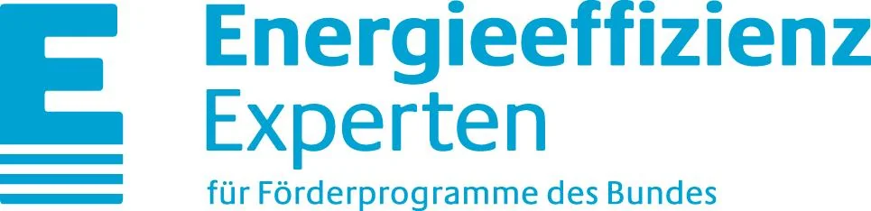

Jairo Ramirez · Energie-Effizienz-Experte (dena)
Energieberatung für Schlüchtern & Frankfurt – mit dem Blick des Bauleiters.
Sanierungsfahrplan, Energieausweis und Förderstrategie – geplant von einem Maurermeister und Energieberater mit über 30 Jahren Baupraxis. Damit Ihre Sanierung nicht nur auf dem Papier funktioniert, sondern auf der Baustelle.
- Eingetragen in der dena-Expertenliste
- Mitglied im GIH Bundesverband
- Festpreisangebot vor Auftrag
- Beratung auf Deutsch und Spanisch

-

Energie-Effizienz-ExperteGelistet für die Förderprogramme des Bundes (BAFA, KfW) - Mitglied im GIHBundesverband Gebäudeenergieberater Ingenieure Handwerker
- Maurermeister · Staatl. gepr. TechnikerStudium Energie und Umwelt, Universität Kassel
Leistungen
Vier Leistungen. Ein klares Ergebnis.
Von der ersten Begehung bis zum geförderten Sanierungsfahrplan – jede Leistung mit definiertem Umfang, schriftlichem Festpreisangebot und einem Ergebnis, mit dem Sie weiterarbeiten können.
-
Details
Vor-Ort-Energieberatung
Begehung von Gebäudehülle und Anlagentechnik, Schwachstellenanalyse und ein priorisiertes Kurzprotokoll. Die fundierte Grundlage für jede Entscheidung – ob Heizungstausch, Dämmung oder Immobilienkauf.
-
Details
Energieausweis
Verbrauchs- oder Bedarfsausweis nach Gebäudeenergiegesetz (GEG) – rechtssicher für Verkauf, Vermietung und Finanzierung. Beim Bedarfsausweis mit Aufnahme vor Ort statt Schätzung aus der Ferne.
-
Details
Individueller Sanierungsfahrplan (iSFP)
Ihr Gebäude Schritt für Schritt zum Effizienzhaus: Maßnahmenpakete in sinnvoller Reihenfolge, mit Kosten, Einsparung und Förderung. Vom Bund mit 50 % des Honorars bezuschusst.
-
Details
Fördermittelberatung BAFA / KfW
Welche Programme passen zu Ihrem Vorhaben – Zuschuss oder Kredit, Einzelmaßnahme oder Effizienzhaus? Ich übernehme Antragstellung, technische Projektbeschreibung und die Bestätigung nach Durchführung (BnD).
Fachplanung & Nachweise
Für Bauherren, Planer und Handwerksbetriebe, die belastbare Berechnungen brauchen – als Einzelleistung oder im Rahmen der Baubegleitung.
- Hydraulischer Abgleich
- Wärmebrücken (2D-Berechnung)
- Sommerlicher Wärmeschutz (DIN 4108-2)
- Lüftungskonzept (DIN 1946-6)
- Luftdichtheitskonzept
- Innendämmung (WTA 6-4)
- Feuchteschutz (DIN 4108-3)
- Hygrothermische Simulation (WUFI)
- Baubegleitung & Qualitätssicherung
Jairo Ramirez Maurermeister · Staatl. gepr. Techniker · Energieberater und Anlagenplaner erneuerbare Energien (Universität Kassel)
Warum Ramirez
Bauphysik verstehen. Baustellen kennen.
Über 30 Jahre Bauleitung, Meisterbrief und ein Studium Energie und Umwelt: Ich kenne beide Seiten – die Berechnung am Schreibtisch und die Ausführung auf der Baustelle. Das merken Sie an Empfehlungen, die realistisch kalkuliert sind und am Ende halten, was die Bilanz verspricht.
-
Reihenfolge statt Aktionismus
Dämmung vor Heizungstausch oder umgekehrt? Ich plane Maßnahmen so, dass sich Investitionen nicht gegenseitig entwerten – und Sie in Etappen sanieren können.
-
Förderung vollständig ausschöpfen
BAFA, KfW, iSFP-Bonus, Landesprogramme: Ich kenne die Bedingungen, stelle die Anträge und liefere die Nachweise – damit kein Zuschuss liegen bleibt.
-
Empfehlungen, die auf der Baustelle bestehen
Welches Detail ist ausführbar, was kostet es wirklich, wo drohen Bauschäden? Nach drei Jahrzehnten Bauleitung weiß ich das – bevor der Handwerker fragt.
-
Herstellerneutral und unabhängig
Ich verkaufe keine Wärmepumpen, Fenster oder Dämmstoffe. Meine Empfehlung richtet sich nach Ihrem Gebäude und Ihrem Budget – nicht nach einer Provision.
Ablauf
In vier Schritten zum belastbaren Ergebnis.
Klar strukturiert, ohne Überraschungen: Sie wissen zu jedem Zeitpunkt, was als Nächstes passiert und was es kostet.
-
Erstgespräch
Kostenfrei und telefonisch: Wir klären Ihr Vorhaben, den Gebäudetyp und welche Leistung tatsächlich sinnvoll ist.
kostenfrei · telefonisch -
Festpreisangebot & Förderantrag
Sie erhalten ein schriftliches Festpreisangebot. Den BAFA-Antrag für die geförderte Energieberatung stelle ich für Sie.
schriftlich · verbindlich -
Aufnahme vor Ort
Begehung vom Keller bis zum Dach: Bauteile, Anlagentechnik, Verbräuche – und Ihre Pläne für das Gebäude.
Termin nach Absprache -
Bericht & Besprechung
Sie erhalten den Bericht – Sanierungsfahrplan, Energieausweis oder Kurzprotokoll – und wir gehen die Ergebnisse gemeinsam durch.
persönlich erläutert
Honorar & Förderung
Transparent kalkuliert. Zur Hälfte gefördert.
Sie erhalten vor Auftragserteilung ein schriftliches Festpreisangebot – abhängig von Gebäudegröße und Leistungsumfang. Für die Energieberatung mit Sanierungsfahrplan übernimmt der Bund die Hälfte des Honorars; den Antrag stelle ich.
Stand: Oktober 2026. Förderkonditionen können sich ändern – maßgeblich sind die jeweils gültigen Richtlinien von BAFA und KfW.
Kontakt
Sprechen wir über Ihr Gebäude.
Rufen Sie an oder schreiben Sie mir. Sie erhalten in der Regel innerhalb von 24 Stunden eine Antwort – und ein Festpreisangebot, sobald Umfang und Gebäude klar sind.
- Telefon+49 160 7764812
- E-Mailinfo@energieberater-ramirez.de
- BüroGundhelmer Str. 57
36381 Schlüchtern - ErreichbarMo–Fr, 08:00–18:00 Uhr
- EinzugsgebietSchlüchtern, Main-Kinzig-Kreis, Frankfurt am Main und Rhein-Main
Beratung auf Deutsch und Spanisch. Asesoramiento energético también en español.
Anfrage senden
Beschreiben Sie kurz Ihr Gebäude und Ihr Vorhaben – ich melde mich mit einer ersten Einschätzung.
FAQ
Häufige Fragen
Kosten, Förderung, Ablauf – die Antworten, die vor dem Erstgespräch am häufigsten gebraucht werden.
Was kostet eine Energieberatung in Schlüchtern oder Frankfurt?
Das Honorar richtet sich nach Gebäudegröße und Leistungsumfang; Sie erhalten vorab ein schriftliches Festpreisangebot. Für die Energieberatung mit individuellem Sanierungsfahrplan übernimmt die BAFA 50 % des förderfähigen Honorars – maximal 650 € bei Ein- und Zweifamilienhäusern, 850 € bei Wohngebäuden ab drei Wohneinheiten.
Welche Fördermittel gibt es für eine energetische Sanierung?
Einzelmaßnahmen an Gebäudehülle und Anlagentechnik fördert die BAFA, Heizungstausch und Komplettsanierungen zum Effizienzhaus laufen über die KfW. Hinzu kommen Programme der Länder und Kommunen. Welche Kombination für Ihr Vorhaben die höchste Förderung ergibt, prüfe ich im Rahmen der Fördermittelberatung.
Was bringt der iSFP-Bonus?
Mit einem individuellen Sanierungsfahrplan erhöht sich der Zuschuss für spätere Einzelmaßnahmen um 5 Prozentpunkte. Seit Juli 2026 gilt der Bonus für Vorhaben ab 30.000 € förderfähiger Investitionskosten. Der Fahrplan verpflichtet zu nichts – er zeigt, welche Maßnahmen sich in welcher Reihenfolge lohnen.
Wie lange dauert die Ausstellung eines Energieausweises?
Ein Verbrauchsausweis liegt in der Regel innerhalb von 1–2 Wochen vor, sobald die Verbrauchsdaten der letzten drei Jahre vorliegen. Ein Bedarfsausweis erfordert eine Aufnahme vor Ort und ist meist innerhalb von 3–4 Wochen fertiggestellt.
Wer stellt den Förderantrag?
Den Antrag für die geförderte Energieberatung stelle ich für Sie bei der BAFA. Für Einzelmaßnahmen und Effizienzhaus-Vorhaben erstelle ich die technische Projektbeschreibung bzw. die Bestätigung zum Antrag und nach der Umsetzung die Bestätigung nach Durchführung (BnD).
In welchem Gebiet bieten Sie Energieberatung an?
Schlüchtern, der gesamte Main-Kinzig-Kreis sowie Frankfurt am Main und das Rhein-Main-Gebiet. Auf Anfrage auch in angrenzenden Regionen Hessens.
Brauche ich für die Förderung einen gelisteten Energieberater?
Ja. Für die meisten Programme von BAFA und KfW ist die Einbindung eines Energie-Effizienz-Experten aus der dena-Expertenliste Voraussetzung. Als gelisteter Experte erfülle ich diese Anforderung und übernehme die fachliche Antragsbegleitung.